Heart Path
People check their health data often, but don’t always understand what the numbers mean. Heart Path translates heart data into meaning and guides users to clear next steps.


Your Booking, clearly
A redesign that helps first-time visitors to Korea book train tickets on their own. Watching my foreign friends struggle to book trains in Korea made me question whether the system truly supports foreigners — and led me to redesign Korail Talk.
View Prototype1-1. Background
My foreign friends visiting Korea were especially interested in Busan. Whenever they planned a trip there, they asked Korean friends to book their train tickets. Watching this, I began to wonder: why can’t they book on their own? That question started this project.
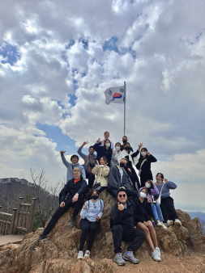
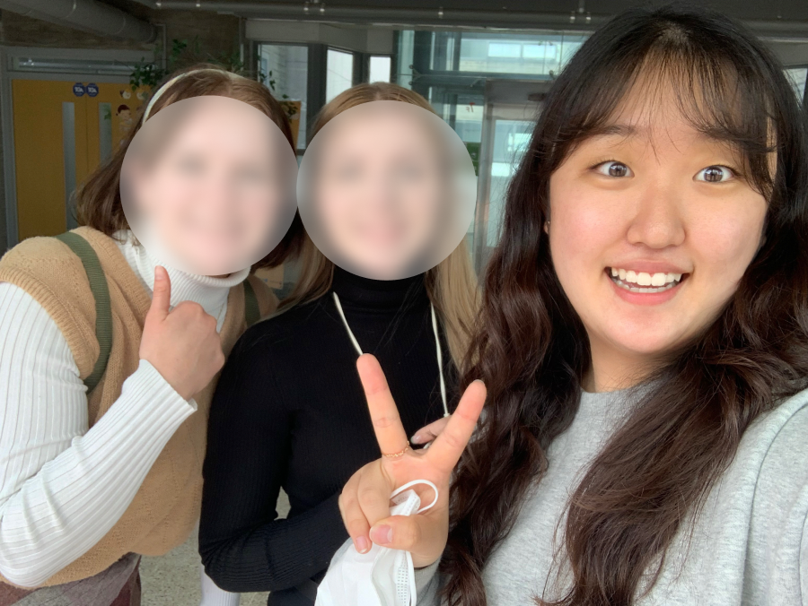
1-2. Designer’s Note
1-3. Secondary Research (Desk Research)
In 2024, 4.82 million foreigners used Korean railways, up 65% in a year — one in four foreign visitors takes the train. Demand isn’t the problem. Comparing train booking apps in Europe, the U.S. and Korea, overseas apps offered train comparison, recommendations and context by default, while Korail Talk relied mainly on text translation.
| Features | Trainline | Amtrak | Korail Talk |
|---|---|---|---|
| Natural Language Search | |||
| Round-Trip Tickets | ✕ | ||
| Nearby Stations (GPS) | ✕ | ||
| Optimal Routes | |||
| Wallet Integration | ✕ |
1-4. Primary Research (1:1 Interview)
I ran semi-structured interviews with five foreigners (3 U.S., 1 Taiwan, 1 India). As expected, most could not complete the booking — they got stuck on station-name search, telling train types apart, and payment details. It wasn’t a language problem: the whole information structure was designed around Korean users.
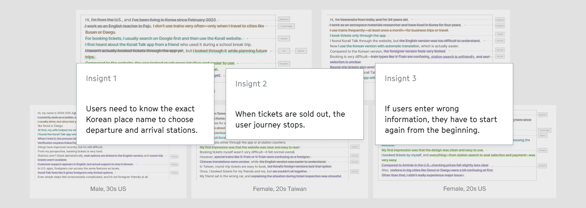
1-5. Thematic Analysis
I regrouped interview quotes into keywords, codes and themes. Users stop booking for three reasons: they think in destinations, not stations; without criteria to compare, they can’t choose; and when the flow breaks, they give up. This set the concept — not an easy-to-search journey, but an easy-to-decide journey.
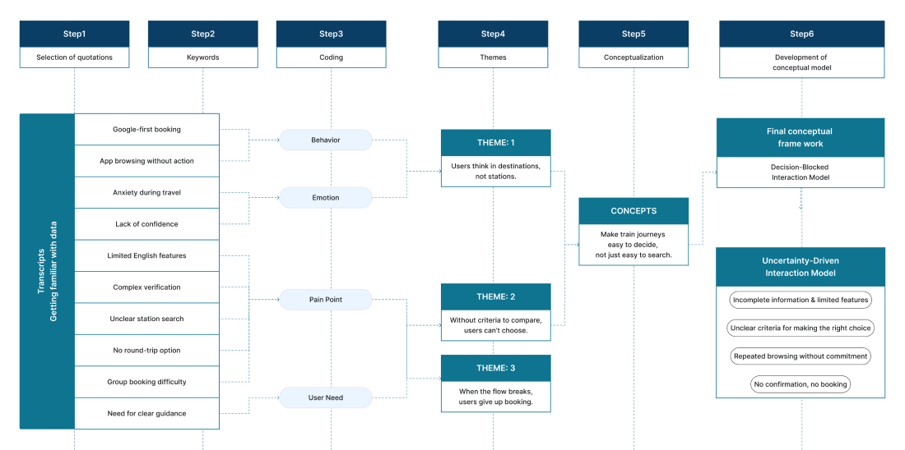
2-1. Persona & User Journey Map
Sophia knows where she wants to go, but not which station or train gets her there. Her journey revealed three breaking points: she must spell the exact station name, she can’t tell KTX from Mugunghwa, and when tickets sell out, her journey stops.
| Name | Sophia |
|---|---|
| Age | 22 |
| Background | Interested in Korean culture · First visit to Korea |
| Goal | Find a convenient way to travel to Haeundae Beach |
| Pain point | Hard to find stations with English search |
“It’s my first Korea trip! I want to go to Haeundae Beach — how can I get there?”
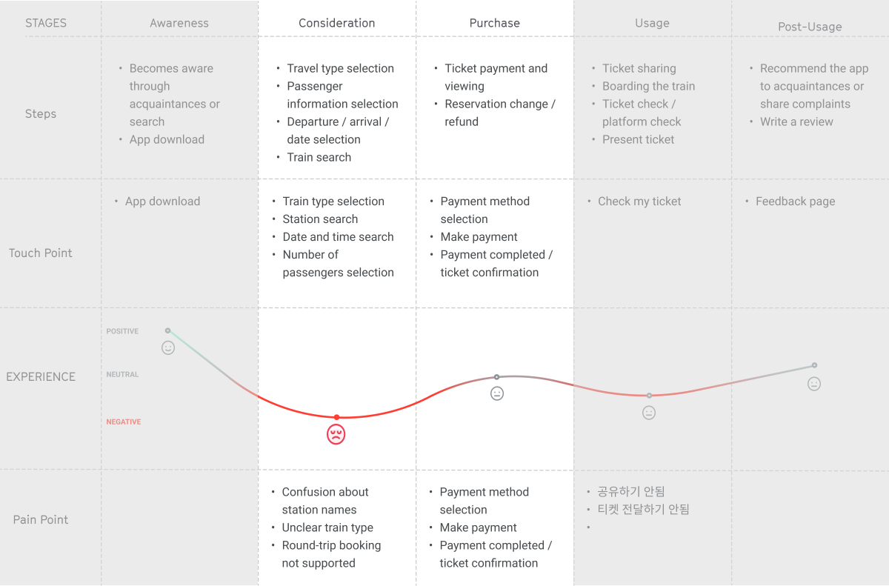
2-2. Problem Statement
Foreign travelers know their destination, but not the station name or train type, so they can’t decide which ticket to buy and stop booking.
How might we
How might we design a more inclusive booking experience that helps users complete their reservation on their own?
3-1. Ideation & Storyboard
Users think in destinations, not stations. So I put map-based search at the center: search a destination and see the nearest station. I drew Sophia’s journey in four scenes — from wanting to visit Haeundae to finding Busan Station and arriving — to see exactly where a traveler stops.
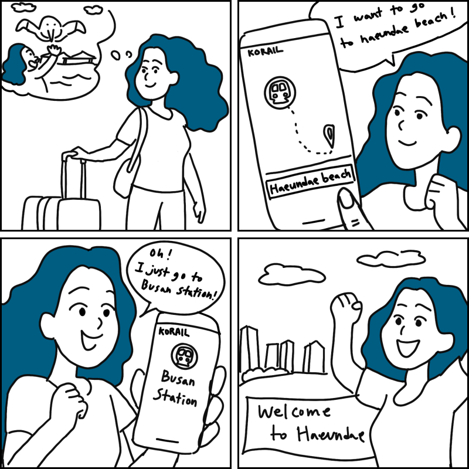
3-2. Idea Sketch
Comparing many directions quickly mattered more than polish, so I sketched search, train selection and sold-out screens with Crazy 8s and kept the simplest flow. Instead of packing features into one screen, each step focuses on one decision: search → train → seat → payment.
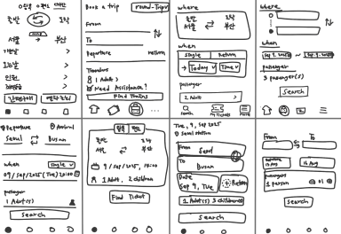
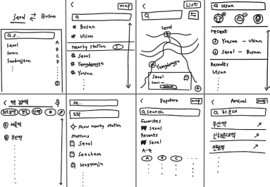
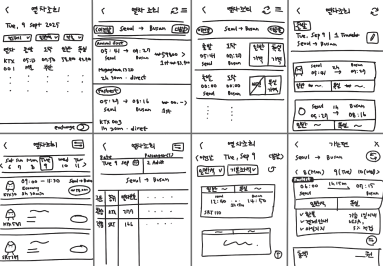
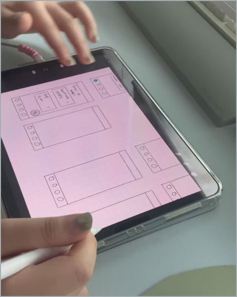
3-3. Feature Prioritization
Interviews showed foreigners stopped first at station-name search and train-type selection. If users get stuck in the first two steps, they never reach payment — so I prioritized destination-based station search and a train selection guide (Do now).
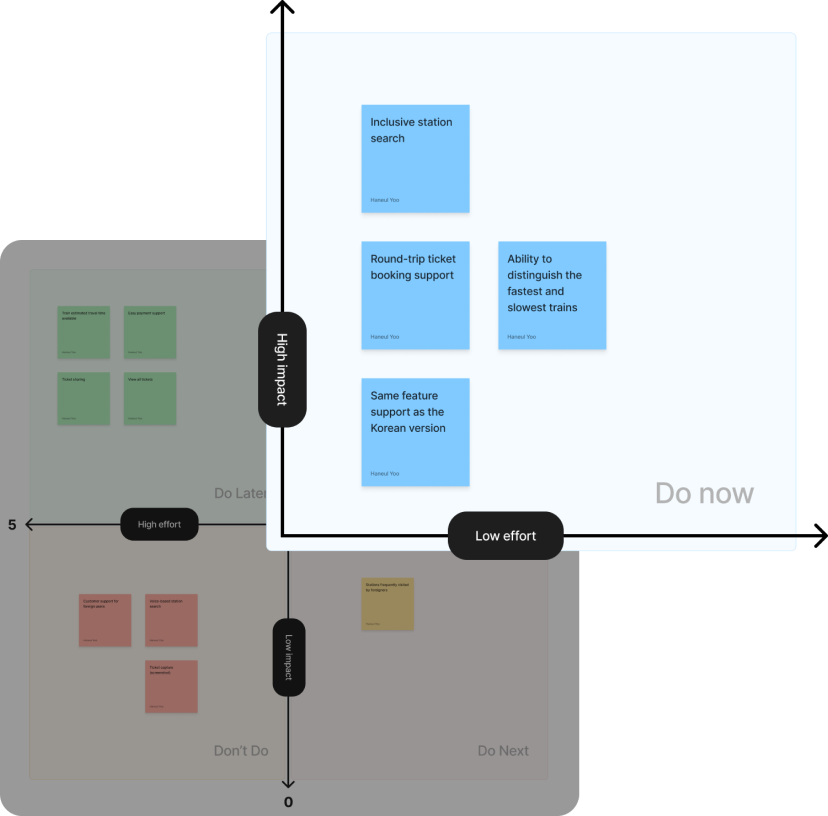
3-4. Wireframe
Before detailing the UI, I connected the core flow — destination search → station selection → train selection → payment — and checked that users never hesitate about their next action. Each step was prioritized so users focus on a single choice.
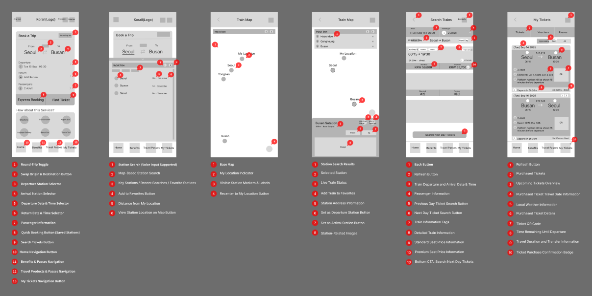
3-5. High-fidelity Design
Wireframes were developed into high-fidelity screens: booking home, map search, outbound selection, reservation, payment, and My Tickets with a QR code.
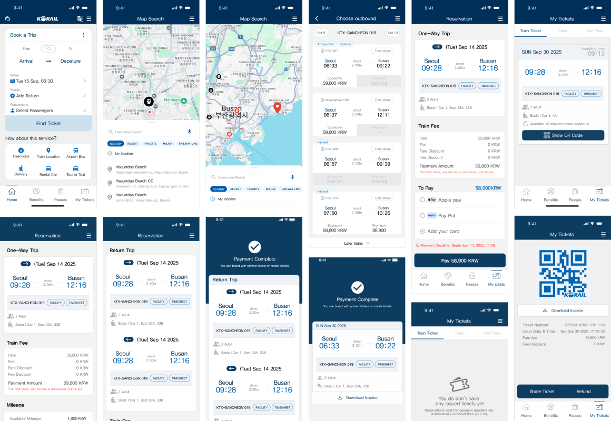
3-6. Design System
As UI elements repeated from search to payment, I defined shared rules and components instead of styling each screen. Using Figma Variables, I separated Foundation and Semantic tokens for color, typography and spacing, so one change applies consistently across every screen.
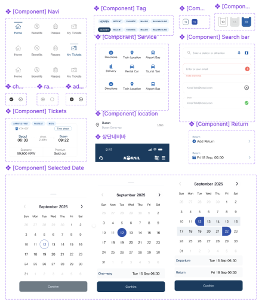
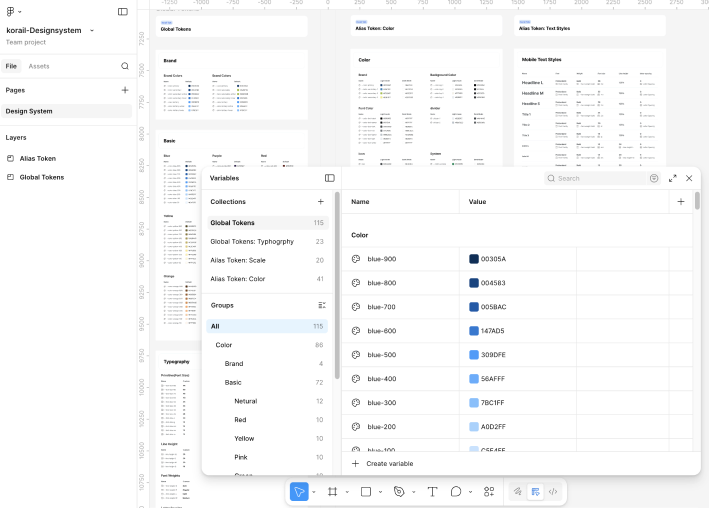
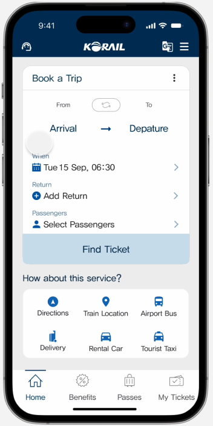
4-1. Main Feature
Foreigners think of places before station names. Tap a station, search a place like Haeundae, and see nearby stations on a map. Nearby · Recent · Favorite · Major · Railway line tabs and My location narrow the choice quickly.
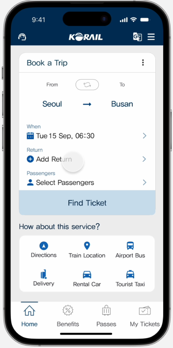
4-2. Main Feature
Departure, arrival, date, return and passengers sit in one card, so users can add a return trip without starting over — something Korail Talk didn’t support.
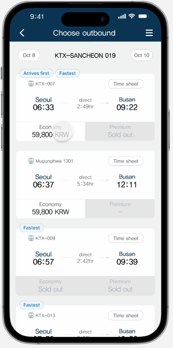
4-3. Main Feature
Foreigners didn’t know the difference between KTX, ITX and Mugunghwa. Each card compares departure and arrival, duration, seat class and price, with Fastest · Arrives first labels to spot the right train instantly.
5-1. Usability Test
I ran usability tests with five participants on the prototype, followed by a post-test survey on station search, the map, and overall booking.
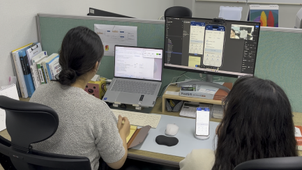
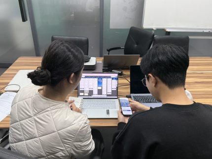
5-2. Result of Test
Choosing stations on a map helped. But users wanted to compare the nearest and second-nearest stations by public-transport travel time and pick the easier one. The key to booking wasn’t search — it was comparing and deciding.
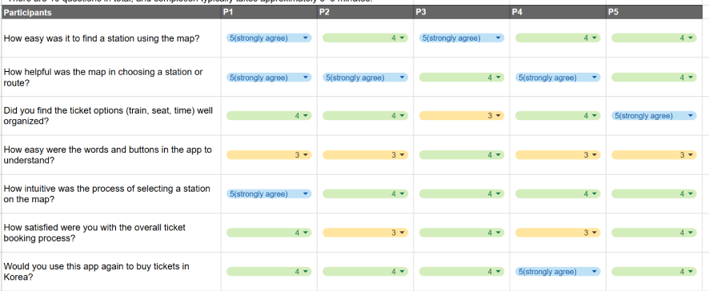
I planned to use the Google Maps API for map-based selection of departure and arrival stations, but Figma’s technical limits kept it from reaching a realistic service level in the prototype. As a result, the map experience wasn’t fully tested.
Based on the test, I’ll show public-transport travel time at the station selection step and recommend the easier route — so the journey never stops and alternative routes are always clear.
People check their health data often, but don’t always understand what the numbers mean. Heart Path translates heart data into meaning and guides users to clear next steps.
A Web GIS service that lets non-experts reach spatial analysis results just by choosing conditions — complex GIS analysis redesigned as a step-by-step flow. (Ongoing, 2026)